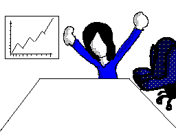
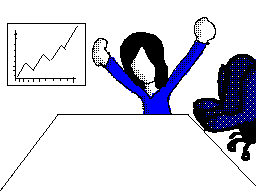

![[ANA JDG] Asterix and the Great Rescue - Megadrive](../vi/6oUXi0ckLmA/default.jpg)
![[ Présentation pour la chaîne Grenier des Joueurs ] JDG Prod](../art/SHAR.6419.583.2.jpg)


Depuis la fin des Ploucs suite à pleins de désaccord et de dégoût de la part de l'un de l'autre (tout le monde est fautif),je me suis mit en tête de garder une trace de ce groupe car il y a de quoi s'inspirer pour de nouvelles histoires et groupes.
Afin de garder la trace, voici la liste des tags qui permettent de visiter les articles en lien avec les différents sujets relatifs aux Ploucs:
LesPloucs
Boredguy08
FanYoshiBleu
Pokémon_Master
Yunko
Sachez que chaque Ploucs est partit de son coté pour de nouvelle aventure donc si ils le veulent,je veux bien vous passer de quoi les retrouver!
FanYoshiBleu est sur WattPad: https://www.wattpad.com/user/FanYoshiBleu
Yunko est sur Twitter: https://twitter.com/YunkoLeTordu
KidpaddleetcieGlin
Description :
Le Blog d'une personne aillant découvert internet en 2007 qui partage une partie de sa vie mais surtout ses réflexions, ses découvertes et ses cours!
Bon, je ne vous garantit pas que 100% du contenu est fiable mais aux moins je l'approuve! :)
N'oubliez pas de me retrouver sur les autres sites internet du réseaux KidpaddleetcieGlin retrouvable dans le premier article de chaque page. ^-^
Bon, je ne vous garantit pas que 100% du contenu est fiable mais aux moins je l'approuve! :)
N'oubliez pas de me retrouver sur les autres sites internet du réseaux KidpaddleetcieGlin retrouvable dans le premier article de chaque page. ^-^
Je bosse actuellement pour la chaîne Grenier des Joueurs
Son morceau préféré
Retour au blog de KidpaddleetcieGlin
Histoire de Pokémon_Master
Bien. Tout commença avant la création de l'univers. Une force encore inexpliquée à ce jour était présente dans le néant. De cette énergie, naquit un être ; Néo.
Néo était fait purement de cette énergie. Néo possédait de grands pouvoirs. Avec ces pouvoirs, il conçu 4 êtres ; un être temps, Dialga, un être spatial, Palkia, un être inversé, Giratina, et un être suprême, Arceus.
Les 4 êtres avaient chacun un rôle défini. Tandis qu'Arceus créait l'univers, Palkia et Dialga y installèrent des normes, des lois ; les lois temporelles et spatiales. Quant à Giratina, il du vivre dans un univers parallèle en raison de certains méfaits, mais ceci est une autre histoire.
Néo vit que les êtres divins s'entendaient, tel des frères. Il se sentait bizarre à la vue de cette " amitié " et créa les êtres gérant ce qu'on appelle aujourd'hui " l'esprit " ; Créfadet, être de la volonté, Créhelf, être de l'esprit, et Créfollet, être des émotions.
Néo se sentait seul, il voulait un être semblable à lui, comme lui, venant du même endroit, et qu'il pouvait considérer comme un frère. Naquit alors Nano, fait à base de la même énergie que son frère, Néo.
Mais très vite, Nano pris un mauvais tournant et devint rapidement jaloux de son frère au pouvoir.
Nano fit de nombreux méfaits comme la destruction totale de certaines civilisations.
Ne supportant plus de voir son frère anéantir ses créations, Néo pris une grande décision ; éliminer son frère.
Cependant, ce dernier, fait de la même énergie que Néo, n'était pas moins puissant que celui ci.
Au bout d'un combat semblant durer une éternité, Néo rassembla ses forces, pour fusionner avec Nano, et s'éliminer, son frère et lui.
Cette catastrophe amena le Big Bang, créant ainsi un nouvel univers. Arceus et les êtres divins, remplit de chagrin à la mort de leur maître, rassemblèrent leurs forces, pour sauvegarder une infime parcelle d'énergie ayant constitué leur maître. Cette infime quantité d'énergie fut sauvegardée sous forme humaine, la création la plus complète de Néo.
L'énergie prit forme d'un nourrisson. Mais malheureusement, aucun des êtres divins ne put garder ce nourrisson bien longtemps, à cause de la colossale perte d'énergie que leur avait demandé la sauvegarde de l'énergie de leur maître.
Le nourrisson du alors être déposé, dans la nature. Les êtres ne voulaient pas qu'un humain mal intentionné, utilise l'énergie à ses desseins.
La deuxième création parfaite de Néo, les Pokémon, plus digne de confiance que les hommes que par leurs pensées n'étant pas faites de machinations, durent s'occuper de l'enfant. En raison de cela, on l'appela Pokémon_Master.
Bien que les êtres divins ne disent rien aux Pokémon, ceux-ci sentaient bien qu'une force pure émanait de ce garçon.
Poké grandit, découvrant alors des pouvoirs de création d'objets (les même pouvoirs qui ont permit à Néo de créé l'univers). Toutefois, ce pouvoir était limité car créé des objets le fatiguait énormément.
En ce concentrant au maximum, il parvint même à créé son objet à lui ; un sabre, donc la lame brillante le fascinait.
Beaucoup plus tard, Poké, ayant grandi, vivait toujours avec les Pokémon. Mais un groupe de brigands voulant capturer des Pokémon à des fins malhonnêtes arrivèrent.
Poké voyant ses camarades et sa famille se faisant battre, frapper, mis à terre, et capturer, ne se contrôla pas. Une mystérieuse aura émana de tout son corps, ses yeux virèrent au rouge, ses pupilles devinrent similaires à celles des chats, et ses vêtements changèrent de couleur (passant au rouge également).
Poké était entré dans un stade de colère pure. En ce " mode ", Poké possédait une force surhumaine, une vitesse supérieure à la moyenne, des sens affûtés, un instinct de survie décuplé, et voyait les personnes l'entourant à la chaleur de leur corps.
Poké, en quelques coups, blessa sévèrement les brigands qui détalèrent comme des lapins.
On ne saurait dire si c'est malheureusement ou heureusement, mais Poké ne peut atteindre cette rage que de deux manières ; la colère ou une émotion d'une puissance phénoménale, ou lorsque sa vie est en danger.
Cependant, cette énorme puissance était un peu trop grande pour son corps : il tomba, et perdit connaissance.
Lorsque Poké se réveilla, il semblait être ce qui paraissait une auberge. Poké se releva tant bien que mal dans son lit, malgré la douleur parcourant ses muscles ankylosés.
Il vit une jeune fille traverser la pièce. Elle le regarda comme si elle venait de voir un fantôme et cria dans toute l'auberge " Il est réveillé !!! ". Accouru alors un homme, plutôt vieux, le regardant d'un air intéressé et rassuré. Cet homme se présenta comme un vieux moine du nom de Gaya, cherchant à donner la paix aux voyageurs. Il raconta à Poké comme quoi il l'avait vu, dans la forêt, se battre, avec cette énorme énergie. Gaya proposa à Poké de l'aider à maîtriser cette énergie, et à lui enseigner les arts martiaux, sous prétexte qu'une si grande force n'était pas une bonne chose entre de mauvaises mains.
Poké accepta sans qu'on lui demande une deuxième fois.
Poké apprit alors à se battre, à méditer, et à trouver l'équilibre en lui avec son maître, ayant toujours des petites phrases un peu perverses faisant sourire Poké dans les moments difficiles. C'est de là d'où vient son côté un peu pervers.
Il avait atteint un tel niveau de symbiose avec lui même, que ses multiples personnalités pouvaient jaillir de son corps pour se battre. Bien que Poké, en se " divisant ", divisait aussi sa force. Donc, plus de Poké, mais moins de puissance.
Pendant son entrainement, il vit aussi un petit Passerouge. Poké parlait très bien la langue des Pokémon et il se noua d'amitié avec le Passerouge.
A la fin de son entrainement, Poké, comme son Passerouge devenu un Flambusard, avait évolué et était devenu plus fort.
Mais la maladie avait frappé Gaya. Sur son lit de mort, ce dernier demanda à Poké, comme Gaya l'avait fait, de sculpter un totem, symbolisant son entrainement. Poké fit un totem en trois parties ; la sagesse, représentée par Gaya, la force et la vigueur, représentée par lui même, et l'équilibre, son ami Flambusard.
En voyant le totem, c'est avec un sourire aux lèvres, que s'en alla Gaya.
Quelques temps après, Collette (la fille gérant l'auberge ) décida de partir, voir du pays. Poké eu l'idée d'en faire de même.
Et ce sont sur des adieux, que se quittèrent Collette et Poké, accompagné de son fidèle ami ailé.
C'est en partant découvrir du pays que Poké découvrit les Ploucs. Il fut le deuxième Plouc après Fan' (et le doc', si on le compte comme un Plouc) et la suite en est à maintenant.
VOUS POUVEZ RETROUVER CE FICHIER AUDIO SUR:
https://soundcloud.com/kidpaddleetcie-glin/histoire-des-ploucspokemon-master
J'ai bien aimé une image:
![[Fan-Art]Pokémon_Master Guitare!](../5252/79895252/pics/3262038360_1_7_lMV113IB.png)
J'en ai fait une version "Pokémon_Master"
![[Fan-Art]Pokémon_Master Guitare!](../5252/79895252/pics/3262038360_1_5_gYF442mA.png)
et j'en ai fait un .gif animé :)
J'ai découvert que mon image d'origine avait déjà un .gif animé quelque jour plus tard :D
![[Fan-Art]Pokémon_Master Guitare!](../5252/79895252/pics/3262038360_1_9_gPubcIij.gif)
J'en ai fait une version "Pokémon_Master"
et j'en ai fait un .gif animé :)
J'ai découvert que mon image d'origine avait déjà un .gif animé quelque jour plus tard :D
Avant propos: Boredguy est un personnage un peu handicapé car il n'a pas vraiment une joie de vivre et ne tente pas de s'élever parce que son créateur l'a créé sans conviction...juste pour se sentir intégré à un groupe !
Notre récit commence là où tout les récits des Ploucs commencent,au Royaume Champignon.
FanYoshiBleu préparait le jeu "Ploucs Quest" pendant que Glin préparait ses fan-arts de légendes alors que Pokémon_Master était la main dans son slip en train de chercher ses clés pour ouvrir la porte de sa maison.Le Doc' regardait un reportage sur la NES et Boredguy parlait tout seul dans son coin.
Fan' rassemble les Ploucs et le Doc' pour demander si les persos leurs plaisent ce que tout le monde affirmèrent...tous sauf Bored' qui n'aimait pas son perso. Fan',un peu troublé par cette révélation retourna faire les sprites de Boredguy et y passa 5 jours avant de le re-présenté à Bored' qui n'y trouva toujours pas son compte.
Fan' y repassa encore et encore du temps dessus et enfin Bored' l'accepta.
Fan' posa une nouvelle question aux Ploucs et au Doc',l'histoire de leurs personnages.
L'exercice était simple,écrire une histoire pour introduire le personnage dans l'univers des Ploucs,pour savoir d'où proviennent ses pouvoirs et sa personnalité.Tout le monde créèrent des histoires plus ou moins longues avec plein de détails marrants ou même intelligent et donc assez complexe...mais Boredguy fait une nouvelle foi preuve de insolence,un manque de respect que FanYoshiBleu ne s'en remettra jamais.
Cet acte odieux fût de n'avoir écrit que quatre lignes qui disait en gros:
"Boredguy c'est un mec qui,un jour, se leva et trouva une cravate.Maintenant partez,vous avec mieux à faire que de lire mon histoire!".
Fan' avait la rage,la diarrhée (ça fait super chier!) et cela n'allait pas s'arranger.
Fan', pour se venger,écrivit la fin de Boredguy,actuellement pas encore dans le jeu
"Ploucs Quest" si ce jeu voit le jour car elle est seul à y travailler vu que le Doc' habite en France,Pokémon_Master a désormais les deux là où vous le pensez,Boredguy déprime et Glin est un simplet ayant deux mains gauches.
La fin de Boredguy se passe ainsi: "Les Ploucs passent dans un chemin pleins de cailloux et Boredguy glisse sur une pierre,tombe et se fracasse la tête sur le sol...FIN".
Voila,c'est ça la fin de Boredguy!
Notre récit commence là où tout les récits des Ploucs commencent,au Royaume Champignon.
FanYoshiBleu préparait le jeu "Ploucs Quest" pendant que Glin préparait ses fan-arts de légendes alors que Pokémon_Master était la main dans son slip en train de chercher ses clés pour ouvrir la porte de sa maison.Le Doc' regardait un reportage sur la NES et Boredguy parlait tout seul dans son coin.
Fan' rassemble les Ploucs et le Doc' pour demander si les persos leurs plaisent ce que tout le monde affirmèrent...tous sauf Bored' qui n'aimait pas son perso. Fan',un peu troublé par cette révélation retourna faire les sprites de Boredguy et y passa 5 jours avant de le re-présenté à Bored' qui n'y trouva toujours pas son compte.
Fan' y repassa encore et encore du temps dessus et enfin Bored' l'accepta.
Fan' posa une nouvelle question aux Ploucs et au Doc',l'histoire de leurs personnages.
L'exercice était simple,écrire une histoire pour introduire le personnage dans l'univers des Ploucs,pour savoir d'où proviennent ses pouvoirs et sa personnalité.Tout le monde créèrent des histoires plus ou moins longues avec plein de détails marrants ou même intelligent et donc assez complexe...mais Boredguy fait une nouvelle foi preuve de insolence,un manque de respect que FanYoshiBleu ne s'en remettra jamais.
Cet acte odieux fût de n'avoir écrit que quatre lignes qui disait en gros:
"Boredguy c'est un mec qui,un jour, se leva et trouva une cravate.Maintenant partez,vous avec mieux à faire que de lire mon histoire!".
Fan' avait la rage,la diarrhée (ça fait super chier!) et cela n'allait pas s'arranger.
Fan', pour se venger,écrivit la fin de Boredguy,actuellement pas encore dans le jeu
"Ploucs Quest" si ce jeu voit le jour car elle est seul à y travailler vu que le Doc' habite en France,Pokémon_Master a désormais les deux là où vous le pensez,Boredguy déprime et Glin est un simplet ayant deux mains gauches.
La fin de Boredguy se passe ainsi: "Les Ploucs passent dans un chemin pleins de cailloux et Boredguy glisse sur une pierre,tombe et se fracasse la tête sur le sol...FIN".
Voila,c'est ça la fin de Boredguy!
Les voix que désire avoir les créateurs des Ploucs:
Pokémon_Master: Alexandre Crepet
FanYoshiBleu: ...
Glin: Miwa Matsumoto
Boredguy: ...
Pokémon_Master: Alexandre Crepet
FanYoshiBleu: ...
Glin: Miwa Matsumoto
Boredguy: ...
![[Les Ploucs]Nos p'tites têtes!](../5252/79895252/pics/3253550232_1_3_lB4VQd0P.png)
![[Les Ploucs]Nos p'tites têtes!](../5252/79895252/pics/3253550232_1_7_oyEwmpqv.png)
![[Les Ploucs]Nos p'tites têtes!](../5252/79895252/pics/3253550232_1_9_R2EwXPIu.png)
![[Fan-Art]Pokémon_Master Objection](../5252/79895252/pics/3251796992_1_5_i1OSG4kH.png)
![[Fan-Art]Les ploucs attaquent](../5252/79895252/pics/3251276648_1_3_onawiU9i.gif)
![[Fan-Art]Les ploucs attaquent](../5252/79895252/pics/3251276648_1_5_eBIczucG.gif)
![[Fan-Art]Les ploucs attaquent](../5252/79895252/pics/3251276648_1_11_qPqN8HPF.gif)
![[Fan-Art]Les ploucs attaquent](../5252/79895252/pics/3251276648_1_13_3yPSU1ty.gif)
![[Fan-Art]"AmiiboLinkToon VS FanYoshiBleu" et "Badass Pokémon_Master"](../5252/79895252/pics/3249747058_1_3_qkXWaj4f.jpg)
![[Fan-Art]"AmiiboLinkToon VS FanYoshiBleu" et "Badass Pokémon_Master"](../5252/79895252/pics/3249747058_1_7_0H6qLBrV.png)
![[Fan-Art]"AmiiboLinkToon VS FanYoshiBleu" et "Badass Pokémon_Master"](../5252/79895252/pics/3249747058_1_9_sgloLdKR.png)
![[Fan-Art pour les ploucs]Incrustation Persos](../5252/79895252/pics/3248785956_1_9_Y2U4MPpY.gif)
![[Fan-Art pour les ploucs]Incrustation Persos](../5252/79895252/pics/3248785956_1_11_Q3rwFChz.gif)
![[Fan-Art]Animes des ploucs](../5252/79895252/pics/3248673604_1_3_QvBW024j.gif)
![[Fan-Art]Animes des ploucs](../5252/79895252/pics/3248673604_1_5_qlEcWpqv.gif)
![[Fan-Art]Animes des ploucs](../5252/79895252/pics/3248673604_1_7_tp0dpTLF.gif)
![[Fan-Art]Animes des ploucs](../5252/79895252/pics/3248673604_1_9_ai9CsdN3.gif)
![[Fan-Art]Animes des ploucs](../5252/79895252/pics/3248673604_1_11_19Z5Yejp.gif)
![[Fan-Art]Animes des ploucs](../5252/79895252/pics/3248673604_1_13_hKtzRDLz.gif)
![[Fan-Art]Animes des ploucs](../5252/79895252/pics/3248673604_1_15_1AY2P7zm.gif)

![[Fan-Arts]Tout le monde dance!](../5252/79895252/pics/3248403350_1_5_Bj6hcIaz.gif)
![[Fan-Arts]Tout le monde dance!](../5252/79895252/pics/3248403350_1_7_AzT6lDU5.gif)
![[Fan-Arts]Tout le monde dance!](../5252/79895252/pics/3248403350_1_9_fagtIuxj.gif)
![[Fan-Art]Boredguy,FanYoshiBleu,Pokémon_Master et Glin à table!](../5252/79895252/pics/3248371914_1_3_dnrsLSZE.gif)
![[Fan-Art]Boredguy,FanYoshiBleu,Pokémon_Master et Glin à table!](../5252/79895252/pics/3248371914_1_5_OyFI6kcf.gif)
![[Fan-Art]Boredguy,FanYoshiBleu,Pokémon_Master et Glin à table!](../5252/79895252/pics/3248371914_1_7_i3mPwAYS.gif) 

![[Fan-Arts]Pokémon_Master](../5252/79895252/pics/3248335214_1_3_nsj6fVQ2.png)
![[Fan-Arts]Pokémon_Master](../5252/79895252/pics/3248335214_1_9_vzeu5zeU.jpg)
Partage